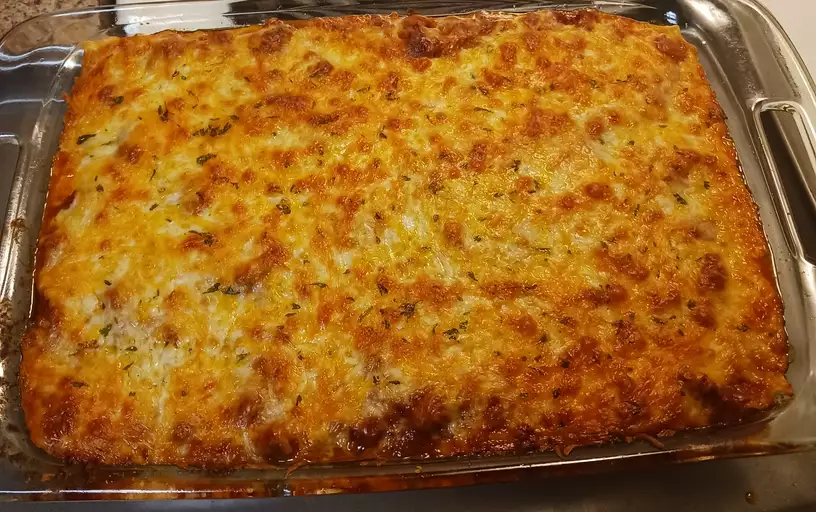

World's Best Lasagna

Description
Making lasagna can be time-consuming, but the results are well worth the wait.
You'll find a detailed ingredient list and step-by-step instructions in the recipe
below, but let's go over the basics.
Ingredients
The Allrecipes community adores this lasagna recipe because it's incredibly customizable,
so you can easily alter the ingredient list to suit your needs. If you want to stay true
to the original recipe, though, these are the ingredients you'll need to add to your
grocery list:
- Sweet Italian sausage
- Lean gorund beef
- 1 onion
- 2 cloves of garlic
- 1 can crushed tomatoes
- 2 cans tomato sauce
- 2 tbsp white sugar
- Fresh parsley
- Dried basil leaves
- Salt
- Italian seasoning
- Fennel seeds
- Black pepper
- Lasagna noodles
- Cheeses (parmesan, mozzarela, and ricotta)
- Egg
Steps
- Make the meat sauce.
- Cook the noodles.
- Make the ricotta mixture.
- Layer the lasagna.
- Cover with foil and bake at 375 degrees F, 25 minutes covered with foil and 25 minutes uncovered.
- Let lasagna rest before serving.